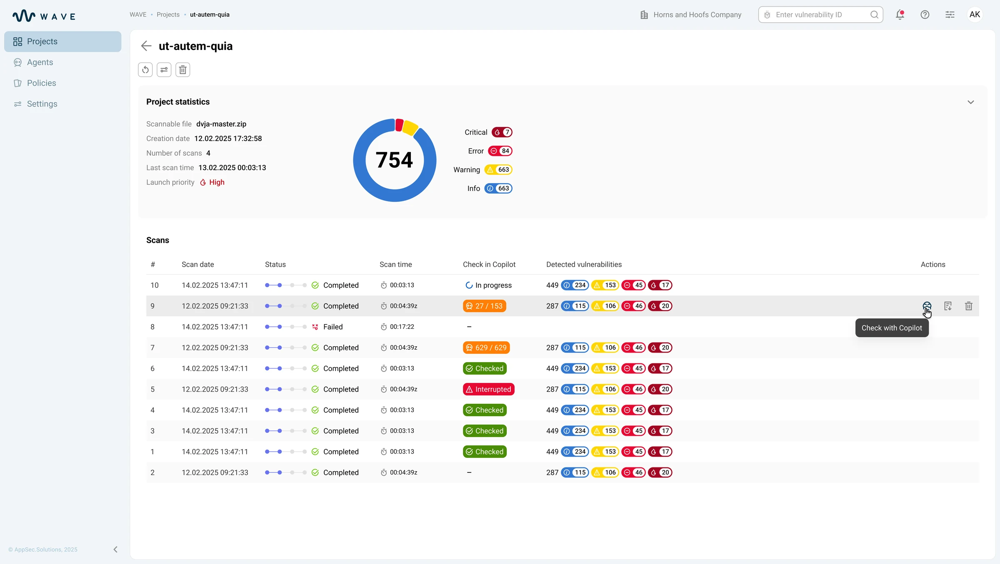
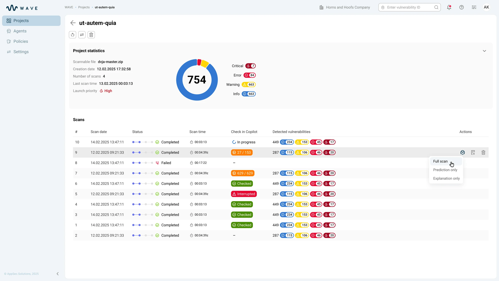
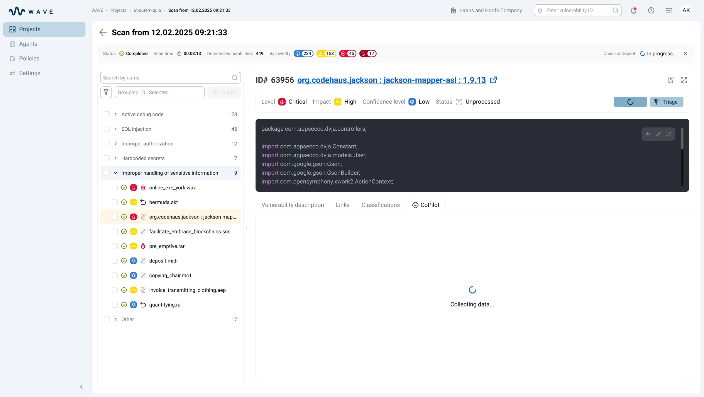

Context
В enterprise AppSec после каждого скана аналитик получал сотни находок — реальные уязвимости вперемешку с false positive. Каждую нужно было открыть, проверить компонент, paths и контекст в коде. На больших проектах разбор одного скана растягивался на часы, и с ростом объёма росла цена ошибки: пропустить реальную уязвимость или потратить день на ложную.In enterprise AppSec, every scan left the analyst with hundreds of findings — real vulnerabilities mixed with false positives. Each one had to be opened and checked against its component, paths and context in the code. On large projects, triaging a single scan stretched into hours, and as the volume grew so did the cost of a mistake: miss a real vulnerability, or burn a day on a false one.
Design challenge
Главный риск — превратить AI в ещё один «чёрный ящик». Интерфейс должен был ускорять triage, но показывать, что проверено, почему AI так решил и где вывод можно подтвердить.The main risk was turning AI into yet another “black box.” The interface had to speed up triage while showing what was checked, why AI decided so and where the conclusion can be confirmed.

Моя рольMy role
Проектировала UX AI-триажа: статусы проверки на уровне проекта, скана и находки, выбор режима анализа и карточку AI-вердикта. Работала с ML-командой, PM и аналитиками безопасности, чтобы перевести модельные сигналы в понятный рабочий интерфейс.I designed the UX of AI triage: check statuses at the project, scan and finding level, the analysis-mode choice and the AI verdict card. I worked with the ML team, PM and security analysts to translate model signals into a clear working interface.
ЗадачиGoals
- Разложить AI-проверку на состояния для проекта, скана и отдельной находкиBreak the AI check into states for the project, the scan and an individual finding
- Спроектировать режимы Full scan, Prediction only и Explanation onlyDesign the Full scan, Prediction only and Explanation only modes
- Собрать карточку AI-вердикта с prediction, explanation и конфликтом сигналовBuild the AI verdict card with prediction, explanation and signal conflict
- Встроить triage-действие в существующие статусы, историю решений и проверку кодаEmbed the triage action into existing statuses, decision history and code review
РешениеSolution
Статус AI-проверки на уровне проекта и каждого скана:AI check status at the project and per-scan level: в таблице сканов сразу видно, где AI-проверка не запускалась, где идёт анализ, что завершено и где проверка прервалась.the scans table immediately shows where the AI check hasn't run, where analysis is in progress, what is completed and where the check was interrupted.
Выбор глубины проверки: Full scan, Prediction only, Explanation only:Choosing the check depth: Full scan, Prediction only, Explanation only: из строки скана команда выбирает полную проверку, только prediction или только explanation. Так интерфейс поддерживает и быстрый triage, и глубокую проверку.from a scan row the team picks a full check, prediction only or explanation only. This way the interface supports both fast triage and deep review.

Prediction и explanation: два сигнала вместо одного вердикта:Prediction and explanation: two signals instead of one verdict: во вкладке CoPilot вердикт не спрятан в один бейдж: аналитик видит вероятность, объяснение и paths к коду. Если сигналы расходятся, конфликт остаётся видимым.in the CoPilot tab the verdict isn't hidden in a single badge — the analyst sees the probability, the explanation and paths to code. If the signals diverge, the conflict stays visible.


РезультатOutcome
- Triage перестал быть чёрным ящиком:Triage stopped being a black box: аналитик видит вероятность, объяснение и paths к коду — и доверяет вердикту, потому что может его проверить, а не принять на веру. Это то, что отличает рабочий AI-инструмент от «ещё одной кнопки».the analyst sees the probability, the explanation and paths to code — and trusts the verdict because it can be checked, not taken on faith. That's what separates a working AI tool from “one more button.”
- Скорость без слепого доверия:Speed without blind trust: три режима (full scan, prediction only, explanation only) дают выбрать глубину под задачу, а видимый конфликт сигналов останавливает автоматическое согласие с AI там, где решение неоднозначно.three modes (full scan, prediction only, explanation only) let the team pick the depth for the task, while a visible signal conflict stops automatic agreement with the AI where the decision is ambiguous.
- Решение осталось за человеком и стало прослеживаемым:The decision stayed with the human and became traceable: каждый вердикт подтверждается, отклоняется или игнорируется с опорой на explanation, paths и общий след решений — а значит, разбор можно защитить на аудите.every verdict is confirmed, rejected or ignored based on the explanation, paths and the overall decision trail — which means the triage can be defended in an audit.